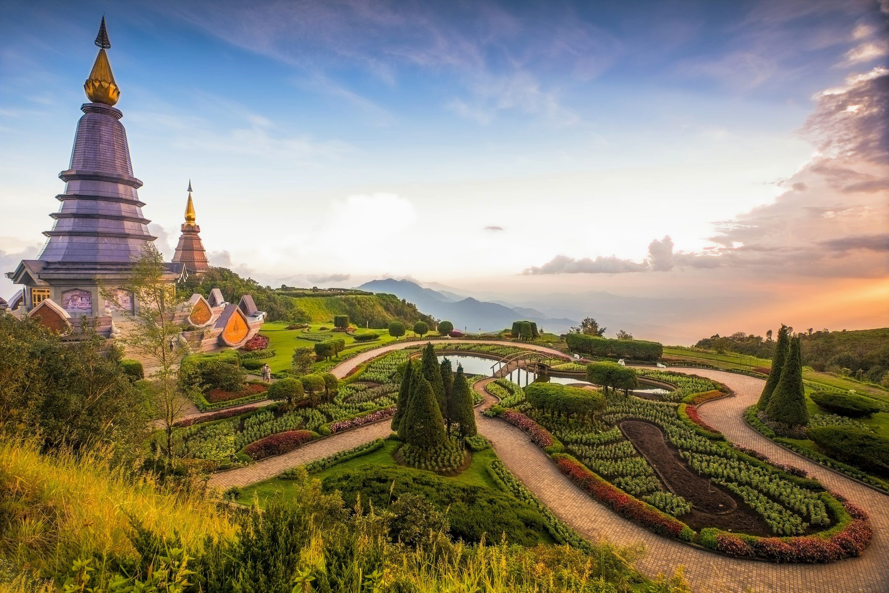

Welcome to Thailand!
Thailand is a Southeast Asian country. It's known for tropical beaches, opulent royal palaces, ancient ruins and ornate temples displaying figures of Buddha. In Bangkok, the capital, an ultramodern cityscape rises next to quiet canalside communities and the iconic temples of Wat Arun, Wat Pho and the Emerald Buddha Temple (Wat Phra Kaew). Nearby beach resorts include bustling Pattaya and fashionable Hua Hin.
Thailand Information
- Capital City: Bangkok
- Population: Approximately 70 million
- Climate: Thailand's climate is influenced by monsoon winds that have a seasonal character (the southwest and northeast monsoon). Most of the country is classified as Köppen's tropical savanna climate. The majority of the south as well as the eastern tip of the east have a tropical monsoon climate. Parts of the south also have a tropical rainforest climate.
- A year in Thailand is divided into three seasons. The first is the rainy or southwest monsoon season (mid–May to mid–October), which is caused by southwestern wind from the Indian Ocean.Rainfall is also contributed by Intertropical Convergence Zone (ITCZ) and tropical cyclones, with August and September being the wettest period of the year.
- Winter or the northeast monsoon occurs from mid–October until mid–February. Most of Thailand experiences dry weather with mild temperatures. Summer or the pre–monsoon season runs from mid–February until mid–May.Due to their inland position and latitude, the north, northeast, central and eastern parts of Thailand experience a long period of warm weather, where temperatures can reach up to 40 °C (104 °F) during March to May, in contrast to close to or below 0 °C (32 °F) in some areas in winter.
- Southern Thailand is characterised by mild weather year-round with less diurnal and seasonal variations in temperatures due to maritime influences. It receives abundant rainfall, particularly during October to November.